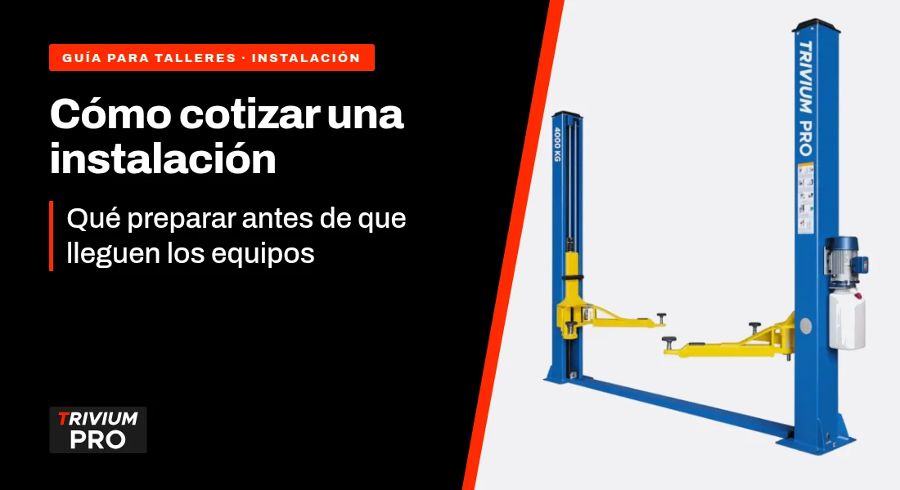
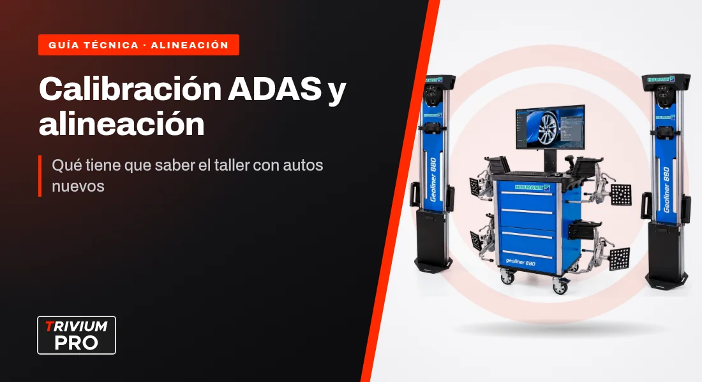

Biblioteca técnica
Guías de compra y notas de taller sobre elevación, alineación, balanceo y desarmado.

Alineación de camiones · 25 de noviembre de 2026
Alineación de camiones con un eje desplazado: por qué importa la referencia
La Josam CV-Aligner no mide de sensor a sensor: toma la línea geométrica central del chasis, común a todos los ejes. Video y diagramas.
Guías de compra

Alineación de flotas y camiones: cómo ofrecer el servicio a empresas

Checklist de seguridad para un taller: elevadores, aire comprimido y pisos

Llave de impacto neumática: cómo elegir torque, tamaño y uso en la gomería

Calibración ADAS y alineación en autos nuevos: qué tiene que saber el taller

Sensores TPMS en el taller: qué son y qué hay que saber antes de ofrecer el servicio

¿Qué capacidad de elevador necesito para pickups y SUV?